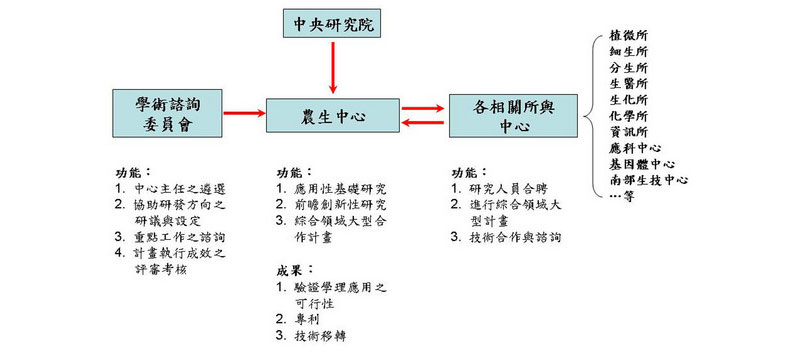

中央研究院農業生物科技研究中心（簡稱農生中心）的前身為生物農業科學研究所籌備處。 經過吳瑞院士、 李遠哲前院長長期的努力，此一研究所 / 中心籌備處成立於 1998 年元月，由楊寧蓀教授擔任籌備處創所主任。 2006 年 8 月依原宗旨轉化成立為農業生物科技研究中心 (Agricultural Biotechnology Research Center)，並由林納生教 授擔任代理主任。 從 2008 年元月起，聘任施明哲教授擔任中心主任，楊淑美教授及徐麗芬教授為中心副主任， 2014 年元月起徐麗芬教授及邱子珍教授為中心副主任，2016 年十月起，聘任葉國楨教授代理中心主任，2017 年元月起常怡雍教授及楊文欽教授為中心代理副主任。到目前為止，農生中心共有十九位研究人員 (Principal Investigators) 及五位研究技師 (Research Specialists)，分別在中央研究院南港院區及位於台南科學園區的中央研究 院南部生物技術中心進行研究工作。2009 年年底院區內同仁已遷往新建落成之農業科技大樓。
農生中心的研究、學術諮詢與合作架構
